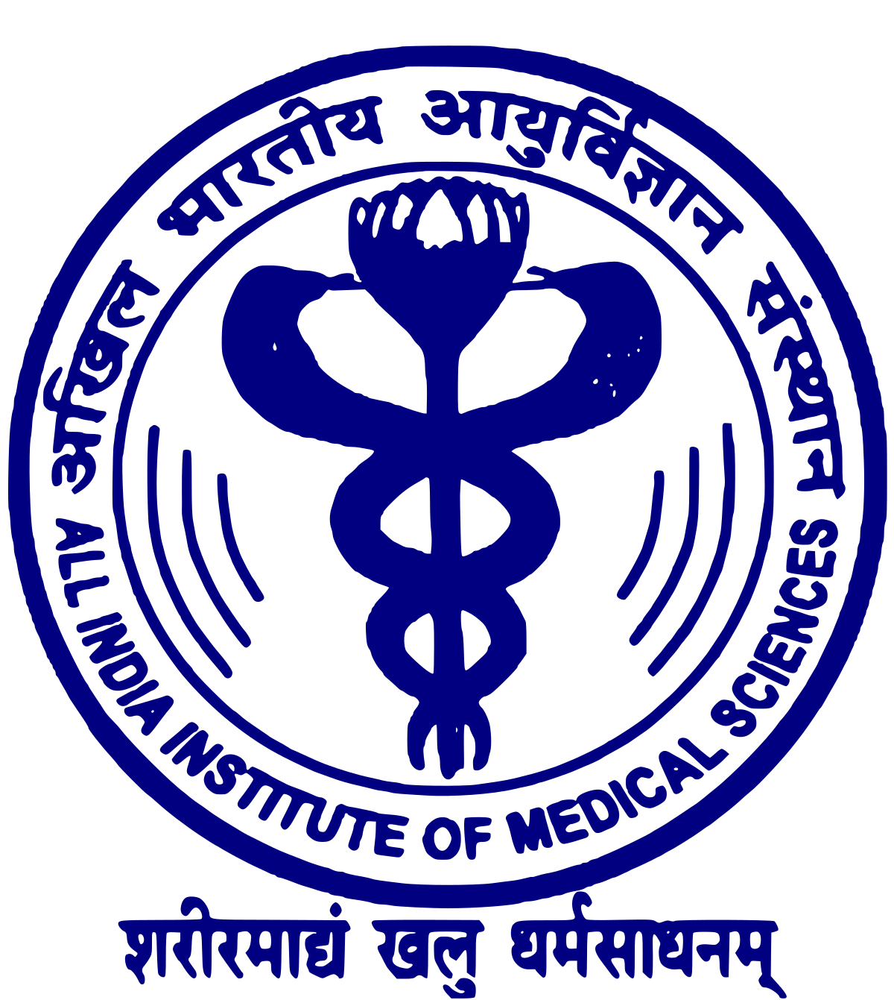
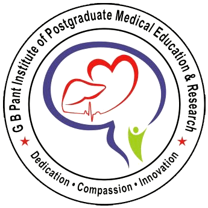

|  |  |  |
||
| All India Institute Medical Sciences, Delhi | Govind Ballabh Pant Institute of Postgraduate Medical Education and Research, Delhi | The National Institute of Mental Health and Neuro-Sciences, Bengaluru | Post Graduate Institute of Medical Education & Research, Chandigarh | Institute of Genomics and Integrative Biology, Delhi |
AIIMS, Delhi
AIIMS (New Delhi) was established in 1956 through an Act of Parliament and operates autonomously under the Ministry of Health and Family Welfare.AIIMS (New Delhi) is governed by the All India Institute of Medical Sciences Act, 1956.[4] AIIMS was established in New Delhi after then Prime Minister of India Pandit Jawaharlal Nehru's initial proposal to set up the institute in Calcutta was turned down by the then Chief Minister of West Bengal Bidhan Chandra Roy.
GB pant, Delhi
The Foundation stone of Govind Ballabh Pant Hospital was laid in October 1961 and was commissioned by the then Prime Minister late Pt. Jawaharlal Nehru on 30th April 1964. From a very humble beginning with 229 beds, it has expended to currently over 700 beds (714 beds). Today it is a internationally recognized tertiary care institution for Heart, Brain and Gastrointestinal and Psychiatic disorders. It offers super specialty treatment to about 3 lac patients in the OPD and almost 15,000 patients in General and Private wards every year.
NIMHANS, Delhi
The history of the institute dates back to 1847, when the Bangalore Lunatic Asylum was founded. In 1925, the Government of Mysore rechristened the asylum as the Mental Hospital. The Mysore Government Mental Hospital became the first institute in India for postgraduate training in psychiatry.The National Institute of Mental Health and Neurosciences (NIMHANS) was the result of the amalgamation of the erstwhile State Mental Hospital and the All India Institute of Mental Health (AIIMH) established by the Government of India in 1954. The institute was inaugurated on 27 December 1974, establishing it as an autonomous body under the Societies Registration Act to lead in the area of medical service and research in the country.On 14 November 1994, NIMHANS was conferred a deemed university status by the University Grants Commission with academic autonomy. The institute has been declared as an Institute of National Importance by an act of parliament in 2012.[8] In March 2017, the Government of India passed the Mental Healthcare Bill 2016, which also proposes to set up NIMHANS-like institutions across the nation
PGIMER, Chandigarh
Postgraduate Institute of Medical Education and Research (PGIMER) is a medical and research institution in Chandigarh, India. It has educational, medical research, and training facilities for its students. It is the leading tertiary care hospital of the region and caters to patients from all over Punjab, J&K, Himachal Pradesh and Haryana. It has all the latest facilities including all specialties, super specialties and sub specialties. Apart from the clinical services, PGI boasts of training in almost all disciplines of Medicine including post graduate and post doctoral degrees, diploma and fellowships. There are more than 50 such training courses in the institute. Since it is a post graduate institute, it does not have facilities for courses.
IGIB, Delhi
CSIR Institute of Genomics and Integrative Biology (CSIR-IGIB) is a scientific research institute devoted primarily to biological research. It is a part of Council of Scientific and Industrial Research (CSIR), India. The institute was founded in 1977 as the Center for Biochemical Technology with a primary focus on biochemical research, but has since shifted its research focus to integrative biology.